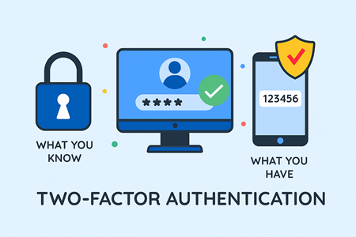
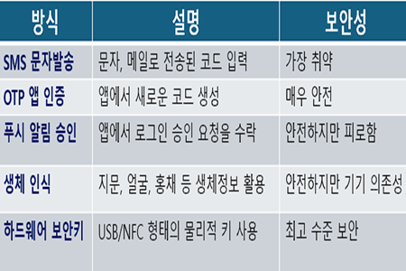
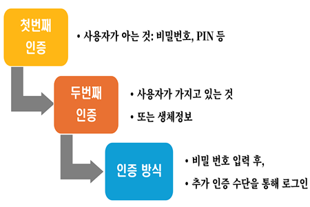
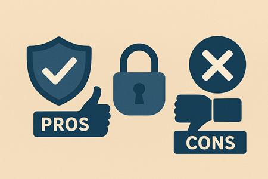

이중 인증(2FA)이란?

이중 인증(2FA, Two-Factor Authentication)은 온라인 계정이나 시스템 접근 시 두 가지 독립적인 인증 요소를 요구하는 보안 방식을 말합니다.
기존 로그인은 아이디와 비밀번호만으로 이루어졌지만, 이는 유출, 재사용, 추측 공격에 취약합니다.
2FA는 이러한 단점을 보완하기 위하여 '아는 것'과 '가지고 있는 것' 또는 '생체 정보'라는 서로 다른 인증 요소를 결합합니다.
예를 들어, 사용자가 비밀번호를 입력한 뒤 휴대폰으로 전송된 일회용 코드(OTP)를 입력하거나, 인증 앱에서 생성된 숫자를 입력하는 방식입니다.
또 다른 예로는 하드웨어 보안키를 연결하거나 지문, 얼굴 인식 같은 생체 정보를 활용하는 경우도 있습니다.
이중 인증의 핵심은 단일 인증 수단이 노출되더라도 계정이 안전하게 보호된다는 점입니다.
2FA는 디지털 시대의 필수 보완 장치로서 개인과 기업 모두에게 계정 탈취를 예방하는 강력한 방어막을 제공합니다.
주요 인증 방식과 보안성

1. SMS 문자 인증: 가장 널리 쓰이는 인증 방식으로, 로그인 시 휴대폰으로 일회용 코드가 전송됩니다.
편리하지만 SIM 스와핑 공격이나 문자 가로채기 위험이 있어서 보안성이 상대적으로 낮습니다.
2. OTP 앱 인증: 구글 Authenticator, Authy 같은 앱에서 일정 시간마다 새로운 코드가 생성됩니다.
네트워크를 거치지 않고 기기에서 직접 생성되므로 보안성이 높고 안정적입니다.
다만 휴대폰 분실 시 복구 절차가 필요합니다.
3. 푸시 알림 승인: 로그인 시 스마트폰에 알림이 뜨고, 사용자가 승인 버튼을 누르면 인증이 완료됩니다.
코드 입력이 필요 없어 사용자 경험이 뛰어나고 빠르지만, 반복적인 승인 요청을 악용하는 MFA 피로 공격에 주의해야 합니다.
4. 생체 인식 인증: 지문, 얼굴, 홍채 등 개인의 고유한 생체정보를 활용합니다.
기기 내부에서만 처리되므로 외부 유출이 적고 편리성도 높습니다.
다만, 센서 환경이나 위조 시도가 변수로 작용할 수 있습니다.
5. 하드웨어 보안키: USB, NFC 형태의 물리적 키를 직접 연결하거나 태그해 인증합니다.
피싱 공격을 원천적으로 차단할 수 있어 가장 강력한 보안 수단으로 평가됩니다.
단점은 비용과 분실 위험이 있습니다.
이중 인증 기본 원리

이중 인증(2FA)은 계정 보안을 강화하기 위해 서로 다른 두 가지 인증 요소를 결합하는 방식입니다.
1. 기본 구조: 첫번째 요소(지식 기반)인 비밀번호, PIN 등 사용자가 알고 있는 정보와 두번째 요소(소유/생체 기반)인 스마트폰 OTP 앱, SMS 코드, 하드웨어 보안키, 생체정보(지문, 얼굴, 홍채) 등 이중 구조로 되어 있습니다.
2. 작동 원리: 사용자가 비밀번호를 입력하여 1차 인증을 통과합니다.
시스템은 추가적으로 OTP 코드 입력, 앱 승인, 보안 키 연결, 생체인식 확인 등을 요구합니다.
두 인증이 모두 성공해야 계정 접근이 허용됩니다.
3. 보안 효과: 비밀 번호가 유출되더라도 추가 인증 없이는 접근이 불가합니다.
피싱, 키로깅, 비밀번호, 재사용 공격에 대한 방어막을 제공합니다.
금융, 클라우드, SNS 등 중요 서비스에서 계정 탈취 위험이 대폭 감소합니다.
4. 주의사항: SMS 인증은 가로채기 위험이 있어 OTP 앱이나 보안키 사용을 권장합니다.
복구 코드, 백업 옵션을 안전하게 보관해야 계정 잠김을 예방할 수 있습니다.
기업 환경에서는 SSO와 결합해 보안성과 업무 효율을 동시에 확보합니다.
장단점 및 활용포인트

[장점]
1. 계정 탈취 위험 대폭 감소
2. 피싱, 비밀번호 유출 상황에서도 추가 방어막 제공
3. 기업 보안 정책 준수 및 개인정보 보호 강화
[단점]
1. SMS 인증은 가로채기 위험 존재
2. OTP 앱 분실 시 복구 절차 필요
3. 하드웨어 키는 비용과 휴대성 문제
4. 사용자가 불편함을 느낄 수 있어 UX 고려 필요
[활용포인트]
1. 금융, 이메일, 클라우드, SNS 등 중요 계정은 반드시 2FA 활성화
2. 가능하다면 SMS 대신 앱 기반 OTP 또는 보안키 사용
3. 복구 코드, 백업 옵션을 안전하게 보관
4. 기업 환경에서는 SSO+2FA로 효율성과 보안 동시 확보